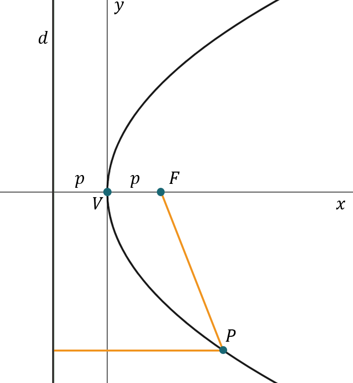

A Parábola é uma das curvas mais importantes e difundidas da matemática. Você já deve ter se deparado com ela quando estudava funções de segundo grau.
Agora vamos estudar a fundo as suas propriedades!
Agora vamos estudar a fundo as suas propriedades!
Definição
Uma parábola é o conjunto de todos os pontos em um plano que são equidistantes entre uma reta e um ponto situados neste mesmo plano
Animação de uma parábola sendo formada com a translação de um ponto ao longo da trajetória equidistante entre um ponto de foco e uma reta. Estilo essa animação: https://www.desmos.com/calculator/0nhiz1nget?lang=pt-BR
A diferença é que nessa animação, a parábola já está plotada. Na nossa, ela será formada ao longo da trajetória do ponto, para indicar que os pontos percorridos geram a parábola.
Evidenciar que as distâncias entre o ponto e a parábola, e a reta e a parábola são iguais.
A diferença é que nessa animação, a parábola já está plotada. Na nossa, ela será formada ao longo da trajetória do ponto, para indicar que os pontos percorridos geram a parábola.
Evidenciar que as distâncias entre o ponto e a parábola, e a reta e a parábola são iguais.
Na animação acima, podemos ver a parábola sendo gerada ao longo dos pontos equidistantes entra uma reta e um ponto. Veja os elementos chave para a construção da parábola:
-
Ponto em preto \(\to\) Foco da parábola
-
Reta em laranja \(\to\) Diretriz da parábola
-
Curva em azul \(\to\) Parábola
Agora que sabemos intuitivamente como uma parábola funciona, vamos encontrar sua expressão matemática.
Faremos isso para dois casos específicos de parábolas com vértice na origem. Os outros casos possíveis, são translações e rotações destes.
Veremos como fazer translações e rotações na aula de Translações e Rotações.
Faremos isso para dois casos específicos de parábolas com vértice na origem. Os outros casos possíveis, são translações e rotações destes.
Veremos como fazer translações e rotações na aula de Translações e Rotações.
Expressão Matemática da Parábola - Caso 1
Caso 1 - Parábola com vértice na origem e foco no eixo \(y\).
Propriedades:
-
\(d \to\) Reta diretriz da parábola
-
\(F \to\) Foco da parábola
-
\(V \to\) Vértice da parábola
-
\(P \to\) Ponto equidistante entre a diretriz e o foco (define a parábola)
-
\(p \to\) Distância entre o foco e o vértice ou vértice e a diretriz
Assim, podemos dizer que a equação desse tipo de parábola é:
\(x^2=4py\)
Arraste o ponto de foco abaixo e veja como a parábola se altera quando mudamos \(p\):
Animação da parábola vertical, adicionar UI que mostra o valor de \(p\). O fundo é um cartesian visível.
Expressão Matemática da Parábola - Caso 2
Caso 2 - Parábola com vértice na origem e foco no eixo \(x\).

Propriedades:
-
\(d \to\) Reta diretriz da parábola
-
\(F \to\) Foco da parábola
-
\(V \to\) Vértice da parábola
-
\(P \to\) Ponto equidistante entre a diretriz e o foco (define a parábola)
-
\(p \to\) Distância entre o foco e o vértice ou vértice e a diretriz
Assim, podemos dizer que a equação desse tipo de parábola é:
\(y^2=4px\)
Veja que o desenvolvimento para a parábola com foco no eixo \(x\) é praticamente idêntico.
E os outros casos?
Nós conseguimos com sucesso descrever e formar a definição principal de uma parábola. Mas parábolas podem residir em qualquer lugar do plano, não apenas na origem, como definimos.
Isso vale para todas as cônicas. Para cobrir todos os casos, basta transladar e rotacionar as equações que já deduzimos.
Vamos fazer isso na aula de Translação e Rotação, mas antes disso, para as próximas aulas, vamos definir e explorar um pouco mais as outras cônicas que existem!
Isso vale para todas as cônicas. Para cobrir todos os casos, basta transladar e rotacionar as equações que já deduzimos.
Vamos fazer isso na aula de Translação e Rotação, mas antes disso, para as próximas aulas, vamos definir e explorar um pouco mais as outras cônicas que existem!